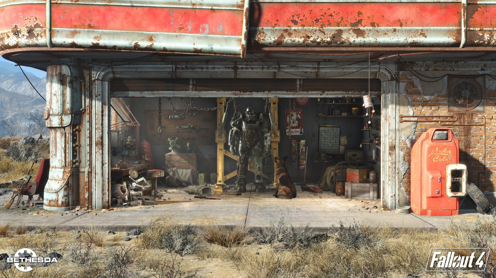
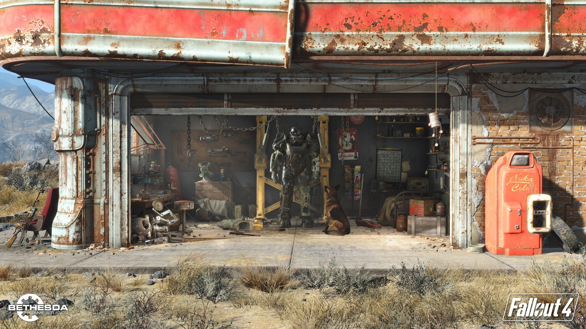

Huy Quang Lai

I am taking this class through word of mouth from friends who have taken this class before. Their discriptions of this class are very interesting and informative.
Huy Quang Lai
I am taking this class through word of mouth from friends who have taken this class before. Their discriptions of this class are very interesting and informative.
 

Learning a new user interface can be surprisingly challenging, even when it's well-designed. While truly unintuitive UIs are rare, the initial unfamiliarity often leaves me hunting for features or second-guessing where to click. Adjusting to new workflows can feel like solving a puzzle, especially when labels, icons, or navigation don't align with my expectations. I sometimes find myself frustrated by small inefficiencies, like needing multiple steps to accomplish what feels like a simple task. Over time, I usually adapt, but those first moments of navigating unfamiliar territory can be frustrating and slow.